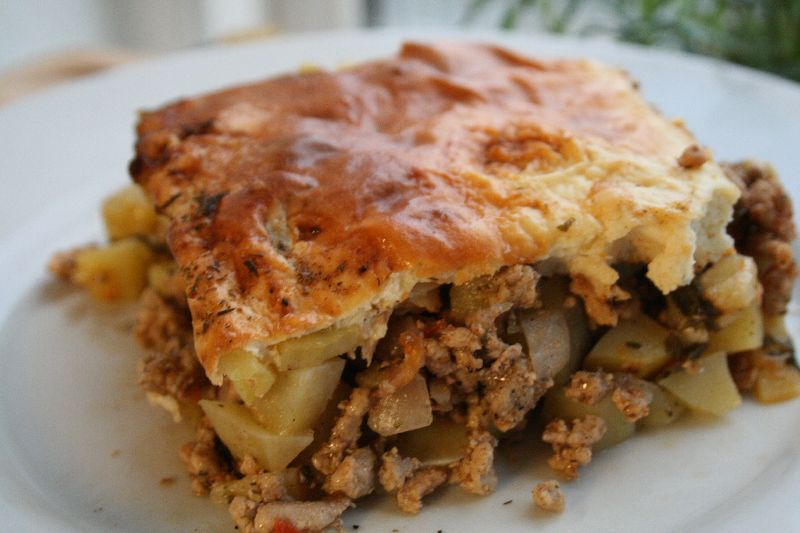

Musaka
Home

Description
Bulgarian moussaka is a baked casserole dish made with layers of potatoes, ground meat, and a creamy egg-yogurt topping. It’s hearty, comforting, and a staple in Bulgarian home cooking.
Ingredients
500 g ground pork or beef
1 onion (chopped)
4–5 medium potatoes (peeled and diced)
2 tablespoons vegetable oil
2 teaspoons paprika
2 eggs
Salt and pepper to taste
1 cup plain yogurt
1 tablespoon flour
Fresh parsley (optional)
Steps
- Preheat oven to 190°C (375°F).
- In a pan, sauté chopped onion in oil, add ground meat, and cook until browned.
- Add paprika, salt, and pepper. Mix well.
- In a baking dish, layer diced potatoes and cooked meat mixture. Stir to combine.
- Add about 1 cup of water. Cover with foil and bake for 40–45 minutes.
- Meanwhile, whisk eggs, yogurt, and flour.
- Pour the mixture over the baked dish and return to oven uncovered for another 15–20 minutes or until golden brown.
- Let it rest before serving. Optionally garnish with parsley.